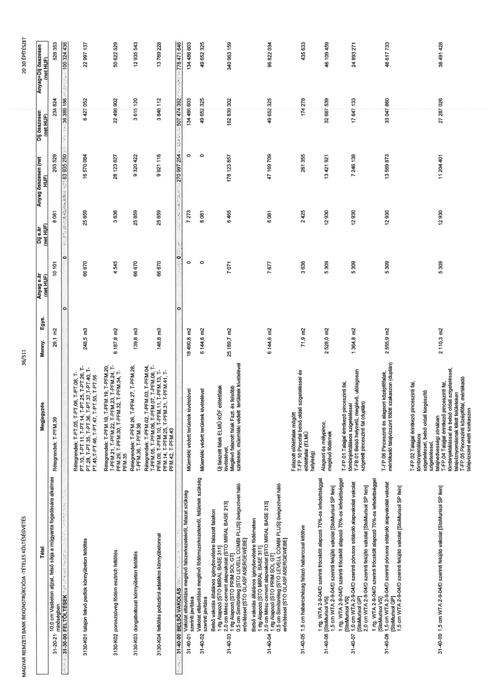

| Tétel | Megjegyzés | Menny. | Egys. | Anyag e.ár (net HUF) | Díj e.ár (net HUF) | Anyag összesen (net HUF) | Díj összesen (net HUF) | Anyag+Díj összesen (net HUF) |
|---|---|---|---|---|---|---|---|---|
| 31-20-21 10,0 cm Vasbeton aljzat, felső síkja a műgyanta fogadására alkalmas minőségben | Rétegrendek: T-PFM.39 | 29,1 | m2 | 10 101 | 8 081 | 293 929 | 234 824 | 528 753 |
| 31-30-00 FELTÖLTÉSEK | NaN | NaN | NaN | 0 | 0 | 63 935 250 | 36 389 186 | 100 324 436 |
| 31-30-K01 talajon fekvő padlók könnyűbeton feltöltés | Rétegrendek: T-PT.05, T-PT.06, T-PT.08, T-PT.10, T-PT.11, T-PT.14, T-PT.25, T-PT.26, T-PT.28, T-PT.35, T-PT.36, T-PT.37, T-PT.40, T-PT.45,T-PT.46, T-PT.47, T-PT.55, T-PT.56 | 248,5 | m3 | 66 670 | 25 859 | 16 570 084 | 6 427 052 | 22 997 137 |
| 31-30-K02 porózusüveg födém esztrich feltöltés | Rétegrendek: T-PFM.18, T-PFM.19, T-PFM.20, T-PFM.21, T-PFM.22, T-PFM.23, T-PFM.24, T-PFM.29, T-PFM.30, T-PFM.32, T-PFM.34, T-PFM.35 | 6 187,8 | m2 | 4 545 | 3 636 | 28 123 627 | 22 498 902 | 50 622 529 |
| 31-30-K03 dongaboltozat könnyűbeton feltöltés | Rétegrendek: T-PFM.26, T-PFM.27, T-PFM.28, T-PFM.36, T-PFM.38 | 139,8 | m3 | 66 670 | 25 859 | 9 320 422 | 3 615 120 | 12 935 543 |
| 31-30-K04 feltöltés polisztirol adalékos könnyűbetonnal | Rétegrendek: T-PFM.02, T-PFM.03, T-PFM.04, T-PFM.05, T-PFM.06, T-PFM.07, T-PFM.08, T-PFM.09, T-PFM.10, T-PFM.11, T-PFM.13, T-PFM.14, T-PFM.25, T-PFM.31, T-PFM.41, T-PFM.42, T-PFM.43 | 148,8 | m3 | 66 670 | 25 859 | 9 921 116 | 3 848 112 | 13 769 228 |
| 31-40-00 BELSŐ VAKOLÁS | NaN | NaN | NaN | 0 | 0 | 270 997 254 | 507 474 392 | 778 471 646 |
| 31-40-01 Vakolat eltávolítása meglévő falszerkezetekről, falazat szükség szerinti javítása | Műemléki védett területek kivételével | 18 490,8 | m2 | 0 | 7 273 | 0 | 134 486 603 | 134 486 603 |
| 31-40-02 Vakolat eltávolítása meglévő födémszerkezetekről, felületek szükség szerinti javítása | Műemléki védett területek kivételével | 6 144,6 | m2 | 0 | 8 081 | 0 | 49 652 325 | 49 652 325 |
| 31-40-03 Belső vakolás általános igénybevételre falazott falakon 1 rtg Alapozó [STO MIRAL BASE 311] 2,0 cm Mész-cement alapvakolat [STO MIRAL BASE 213] 1 rtg Alapozó [STO PRIM SOL GT] 0,5 cm Simítóréteg [STO LEVELL COMBI PLUS] üvegszövet háló erősítéssel [STO GLASFASERGEWEBE] | Új falazott falak ELMÜ KÖF előtétfalak kivételével, Meglévő falazott falak Fszl. és felsőbb szinteken, műemléki védett területek kivételével | 25 189,7 | m2 | 7 071 | 6 465 | 178 123 857 | 162 839 302 | 340 963 159 |
| 31-40-04 Belső vakolás általános igénybevételre födémeken 1 rtg Alapozó [STO MIRAL BASE 311] 2,0 cm Mész-cement alapvakolat [STO MIRAL BASE 213] 1 rtg Alapozó [STO PRIM SOL GT] 0,5 cm Simítóréteg [STO LEVELL COMBI PLUS] üvegszövet háló erősítéssel [STO GLASFASERGEWEBE] | NaN | 6 144,6 | m2 | 7 677 | 8 081 | 47 169 709 | 49 652 325 | 96 822 034 |
| 31-40-05 1,5 cm habarcshézag falazó habarccsal kitöltve | Falazott előtétfalak mögött T-FP.10 Pincelai belső oldali szigeteléssel és előtétfallal (ELMÜ helyiség) | 71,9 | m2 | 3 636 | 2 425 | 261 355 | 174 278 | 435 633 |
| 31-40-06 1 rtg. WTA 2-9-04/D szerinti fröcskölt alapozó 70%-os lefedettséggel [StoMurisol VS] 1,5 cm WTA 2-9-04/D szerinti felújító vakolat [StoMurisol SP fein] | Alagsori és mélypince, meglévő födémek | 2 528,0 | m2 | 5 309 | 12 930 | 13 421 921 | 32 687 539 | 46 109 459 |
| 31-40-07 1,0 cm WTA 2-9-04/D szerinti pórusos sótároló alapvakolat vakolat [StoMurisol GP] 2,0 cm WTA 2-9-04/D szerinti felújító vakolat [StoMurisol SP fein] | T-FP.01 Talajjal érintkező pinceszinti fal, tömbinjektálásos szigeteléssel T-FB.01 Belső helyzeti, meglévő, utólagosan szigetelt pinceszinti fal (duplán) | 1 364,8 | m2 | 5 309 | 12 930 | 7 246 138 | 17 647 133 | 24 893 271 |
| 31-40-08 1,5 cm WTA 2-9-04/D szerinti fröcskölt alapozó 70%-os lefedettséggel [StoMurisol VS] 1 rtg. WTA 2-9-04/D szerinti pórusos sótároló alapvakolat vakolat [StoMurisol GP] 1,5 cm WTA 2-9-04/D szerinti felújító vakolat [StoMurisol SP fein] | T-FP.06 Pinceszinti és alagsori középfőfalak, mértékadó talajvízszint fölötti szakaszon (duplán) | 2 555,9 | m2 | 5 309 | 12 930 | 13 569 873 | 33 047 860 | 46 617 733 |
| 31-40-09 1,5 cm WTA 2-9-04/D szerinti felújító vakolat [StoMurisol SP fein] | T-FP.02 Talajjal érintkező pinceszinti fal, tömbinjektálásos szigeteléssel, belső oldali kiegészítő szigeteléssel, talajnedvességi zónában T-FP.04 Talajjal érintkező pinceszinti fal, tömbinjektálással és belső oldali szigeteléssel, talajvíznyomásnak kitett felületeken T-FP.05 Pinceszinti középfőfal, mértékadó talajvízszint alatti szakaszon | 2 110,3 | m2 | 5 309 | 12 930 | 11 204 401 | 27 287 026 | 38 491 428 |
